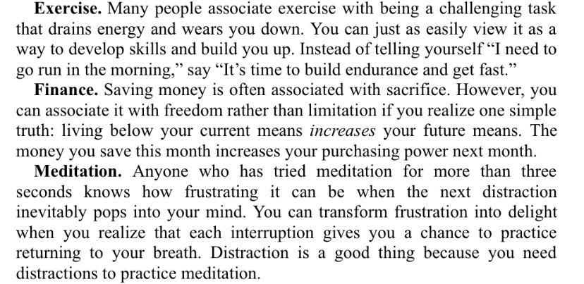

1. The surprising power of atomic habits
In This chapter introduces the concept of atomic habits, which are small , incremental changes that can have a profound impact on our lives over time. The author argues that it's these tiny habits that ultimately determine our success or failure, and offers examples of how they can lead to major changes.

2. How Your Habits Shape Your Identity (and Vice Versa)
In this chapter, Clear argues that our habits are closely tied to our sense of self, and that in order to change our habits, we must first change our identity . He offers strategies for doing so, including reframing our self-talk and focusing on the small wins that reinforce our new identity.
3. How to Build Better Habits in 4 Simple Steps
This chapter lays out Clear's four-step process for building better habits: cue, craving, response, and reward. He explains each step in detail and offers examples of how to apply them to different habit-forming scenarios.

- Cue / make it obvious
- Craving / make it attractive
- Response / make it easy
- Reward / make it satisfying
- Cue / make it invisible
- Craving / make it unattractive
- Response / make it difficult
- Reward / make it unsatisfying
4. The Man Who Didn't Look Right
In this chapter, Clear tells the story of a man who was wrongly accused of a crime due to faulty eyewitness testimony. He uses the story to illustrate the concept of "attentional blindness," which refers to our tendency to overlook details that don't fit our expectations. Clear argues that this phenomenon can have a negative impact on our ability to form good habits and offers strategies for overcoming it.
5. The Best Way to Start a New Habit
In This chapter focuses on the importance of starting small when it comes to building new habits. Clear argues that by starting with tiny, easy-to-do habits, we can build momentum and eventually tackle larger habits. He offers strategies for identifying and implementing small habits in different areas of our lives.

6. Motivation is Overrated; Environment Often Matters More
Clear suggests that we should focus on creating an environment that supports our desired habits,
rather than relying solely on motivation. This can include making changes to our physical surroundings,
as well as our social and cultural environments. He also suggests that we can design our habits to be more
attractive, by linking them to enjoyable activities or creating a sense of progress and achievement.
Overall, Clear argues that while motivation can be helpful in the short-term, it is not enough to sustain long-term
behavior change. Instead, we should focus on creating an environment that supports our desired habits and makes them
automatic.
7. The Secret to Self Control
The idea is that developing self-control is not about willpower, but rather about creating an environment that supports good habits and removes temptation. Clear suggests that the key to self-control is to make the desired behavior the default option, while also making the undesirable behavior more difficult to achieve. He introduces the concept of "temptation bundling ," which involves pairing a desirable habit with an activity that is enjoyable but less productive. By doing this, we can motivate ourselves to stick to good habits. Clear also emphasizes the importance of tracking progress, as it helps us to stay motivated and focused on the long-term goals we are trying to achieve. Overall, the chapter offers practical tips and insights on how to cultivate self-control and develop habits that can lead to lasting change.
8. How to Make Habits Irresistible
The chapter "How to Make Habits Irresistible" in James Clear's book "Atomic Habits" focuses on creating habits
that are not only easy to adopt, but also difficult to resist. According to Clear, the key to creating such habits
lies in making them attractive. He suggests that we can make habits more attractive by using cues, rewards, and
joining a community. For instance, using cues can help us remember to perform a habit while rewards reinforce it
and make it more enjoyable. Similarly, being part of a community of like-minded individuals can provide support
and motivation, making the habit more appealing.
In addition, Clear also emphasizes the importance of reducing the friction associated with the habit.
This means removing any obstacles or barriers that might make it difficult to perform the habit. He suggests
breaking down the habit into smaller, more manageable steps and reducing the effort required to perform them.
By doing so, we can make the habit easier to adopt and stick with in the long run. Overall, the chapter provides
practical strategies and insights on how to make habits irresistible and create lasting changes in our behavior.
9. The role of family and friends in shaping your habits
Examines the impact that social influence can have on our habits. He argues that our habits are largely shaped
by the people around us, including our family, friends, and colleagues. Clear notes that we tend to adopt the
habits of those we spend time with, which can be both positive and negative. For instance, if we have friends
who exercise regularly, we are more likely to develop a habit of exercising ourselves. On the other hand, if we
have friends who smoke, we are more likely to pick up the habit as well.
To make the most of the social influence on our habits, Clear suggests surrounding ourselves with people who
embody the habits we want to develop. This involves seeking out positive role models who can inspire and motivate us,
as well as minimizing exposure to negative influences. He also notes that we can play an active role in shaping the
habits of those around us, by modeling the behaviors we want to see in others and encouraging positive habits in our
social circles. Overall, the chapter highlights the importance of social influence in habit formation and provides
actionable tips on how to leverage this influence to support positive change.
10. How to find and fix the causes of your bad habits
Explores the root causes of our negative habits and how to address them. He notes that many bad habits are the result of deeper issues or triggers, such as stress, boredom, or anxiety. Clear argues that to break a bad habit, we must first identify the underlying cause and address it directly.

11. Walk slowly, but never backwards
Emphasizes the importance of making progress towards our goals, even if it seems small. He encourages us to avoid
falling back into old habits and focus on making consistent improvements, no matter how slow. According to Clear,
even tiny improvements, when accumulated over time, can lead to significant and lasting changes in our lives.
Clear suggests using the concept of "The Plateau of Latent Potential" to make progress towards our goals.
This refers to the idea that significant progress can be made by continuing to put in effort even when it
feels like we are not making progress. By maintaining momentum, being persistent, and making course corrections
when necessary, we can achieve significant and lasting changes in our habits and behaviors over time.

12. The law of least effort
Explores the idea that we are more likely to stick with habits that require less effort. He argues that we naturally
gravitate towards the path of least resistance, and that we can use this tendency to our advantage by making positive
habits easy and convenient to perform.
Clear suggests several strategies for reducing the effort required to perform positive habits, such as
"environment design," which involves setting up our physical space to make it easier to perform the desired
behavior. He also emphasizes the importance of starting small and gradually building up to more challenging
habits, as this allows us to adjust to the behavior and make it a more natural part of our routine.
Overall, the chapter "The Law of Least Effort" highlights the importance of making positive habits easy
and convenient to perform, in order to increase the likelihood that we will stick with them over time.
By reducing the effort required and designing our environment to support the desired behavior, we can
create habits that are sustainable and easy to maintain.
13. How to stop procrastinating by using the two-minute rule
The two-minute rule suggests that we start a new habit by doing it for just two minutes each day. This helps to
reduce the resistance and make it easier to get started. Over time, we can gradually increase the time spent on
the behavior until it becomes a regular part of our routine.
Clear also emphasizes the importance of focusing on the process rather than the outcome. Rather than setting
lofty goals and focusing solely on the end result, we should focus on the daily habits and behaviors that will
help us achieve our goals over time. By focusing on the process and breaking down our goals into small, manageable
steps, we can make it easier to stay motivated and build momentum towards achieving our goals.

14. How to make good habits inevitable and bad habits impossible
Clear discusses the importance of making choices in the present that controls your actions in the future. This technique is called a commitment device. The ultimate way to locl in future behavior is to automate your habits. Using technology to automate your habits is the most reliable and effective way to guarantee the right behavior.
15. The cardinal rule of behavior change
In this chapter Clear explores the idea that there is a mismatch between immediate and delayed rewards. The human brain evolved to prioritize immediate rewards over delayed rewards, and we are more likely to repeat a behavior when de experience is satisfying. The cardinal rule of behavior says that what is immediately rewarded is repeated. What is immediately punished is avoided. To get a habit to stick you need to feel immediately successful, even if it is in a small way. This increases the odds that a behavior will be repeated
16. How to stick with good habits everyday
In this chapter Clear expands the idea of the satisfaction obtained by tracking good habits. He also explains how to recover quickly when a habit break down. It is inevitable that life will interrupt you at some point, perfection is not possible. When this happens, apply this simple rule: never miss twice. Get back to the habit as soon as possible and try to keep your habit streak alive.
17. How an accountability partner can change everything
Clear suggests that an accountability partner can provide several benefits, including increased motivation, shared knowledge
and resources, and a sense of social connection and support. He also emphasizes the importance of choosing the right accountability
partner, someone who shares our goals and values and is willing to provide honest and constructive feedback.
The invertion of the 4th Law of Behavior Change is make it unsatisfying. An accountability partner can create an immediate cost to inaction.
We care deeply about what others think of us, and we do not want the others to have a lesser opinion of us. A habit contract
can be used to add social cost to any behavior. Knowing that someone is watching you can be a powerful motivator.

18. The truth about talent (when genes matter and when they not)
In this chapter Clear discuss the role of genetics in determining talent and success. Being talented means that you have a higher probability to success. The secret to maximizing the odds of success is to choose the right field of competition . Pick the right habit and progress is easy. Pick the wrong habit and life is a struggle. Habits are easier when they align with your natural abilities, so it is better to choose the habits that better suits you.
19. The Goldilocks Rule: How to Stay Motivated in Life and Work
The Goldilocks Rule states that the most motivating experiences occur when we pursue tasks that are just challenging enough to be interesting, but not so difficult that they feel overwhelming. This chapter discusses how to apply the Goldilocks Rule to our habits and goals to stay motivated over the long term. You can maximize your levels of motivation appying the Goldilocks Rule.

20. The downside of creating good habits
The Downside of good habits is that we stop paying attention to little errors. To achieve mastery, it is necessary to review your habits and make adjustments. Habits + deliberate practice = mastery. To review your habits you can use a process called reflection and review, that allows you to remain concious of your performance over time.